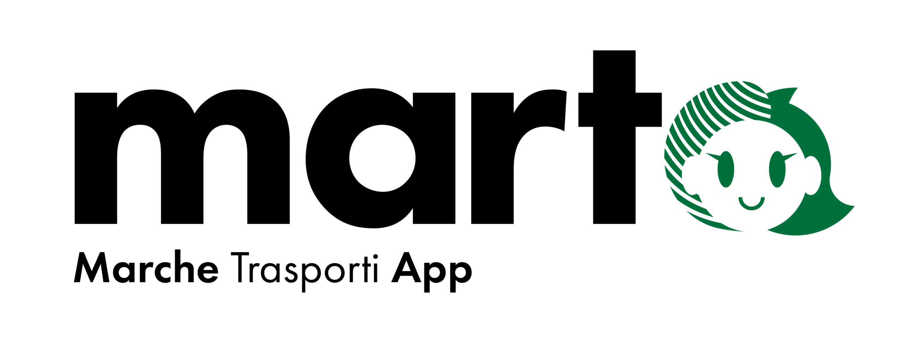

Introduzione
Durante i periodi maggio-giugno e settembre 2024 mi sono recato presso l'azienda Pluservice per la mia esperienza di PCTO.
L'azienda Pluservice
L'impresa si occupa della realizzazione di infrastrutture hardware e software per le aziende di trasporto pubblico di diverse regioni in tutta Italia, tanto che, durante il mio primo periodo di PCTO, ha realizzato MARTA.Un sistema di bigliettazione digitale per la regione Marche, realizzando di fatto il primo sistema regionale d'Italia basato su tecnologia Account Based Ticketing, che registra i biglietti in formato digitale sull'App invece che su carta. 
Un'azienda attenta al personale
L'azienda ha dimostrato fin dall'inizio di tenere ai propri dipendenti, tanto da dedicare diverse aree della struttura, come un'area svago con biliardino e ping pong e una zona palestra.
La mia esperienza
L'azienda si è dimostrata fin da subito molto accogliente. Dopo un iniziale tour del luogo di lavoro, mi è stata assegnata una postazione presso i sistemisti della rete aziendale, dove mi è stato spiegato il funzionamento dei server aziendali, come realizzano le installazioni di macchinari per i clienti e come eseguono la manutenzione e formattazione dei PC.Attività Svolte
I primi giorni mi sono dedicato allo studio di Windows Server per la realizzazione di un server funzionante, seppur con qualche difficoltà sono riuscito a crearne uno che facesse da server DHCP.Sempre per restare in linea con l'argomento, ma anche con le mie passioni, mi sono lanciato in due esperimenti:
Il primo fu la realizzazione di un Tris Multiplayer sia lato client che server.
L'altro esperimento riguardante le connessioni è stata la realizzazione di un "gioco" che prevedeva solo la possibilità di far connettere più giocatori fra di loro qualora uno di essi avesse aperto una sessione come server.
L'ispirazione è stata il gioco Minecraft, che permette di aprire un mondo (partita) a tutti gli altri giocatori collegati alla stessa rete dell'host.
Il tempo richiesto da queste due attività non è stato molto, pertanto ho continuato a realizzare altri piccoli giochetti e a studiare nuove librerie del C# e non solo.
Giudizio finale
Se mi proponessero di ripetere l'esperienza?Beh, decisamente no. Sebbene chiedessi, le attività che mi proponevano erano poche e richiedevano poco tempo, pertanto sono stato costretto in molte occasioni a trovarmi qualcosa da fare per passare il tempo, e alla fine dei conti le cose che facevo lì le avrei potute fare tranquillamente da casa ma con mezzi migliori a disposizione e, soprattutto, senza l'obbligo di stare otto ore là.
Il PCTO mi ha lasciato con un senso d'insoddisfazione e non ritengo che sia stato utile. Spero che in futuro scuole e aziende riescano ad organizzarsi meglio per poter offrire agli studenti qualcosa di ottimale e che valga la pena fare.